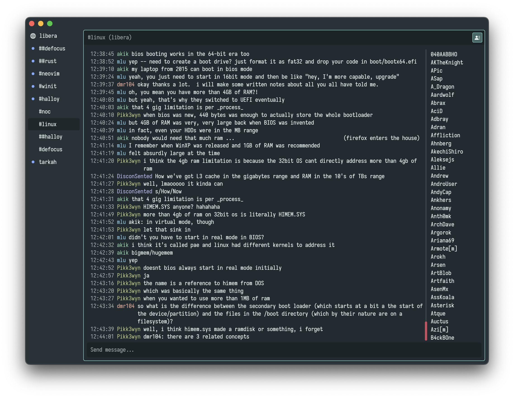
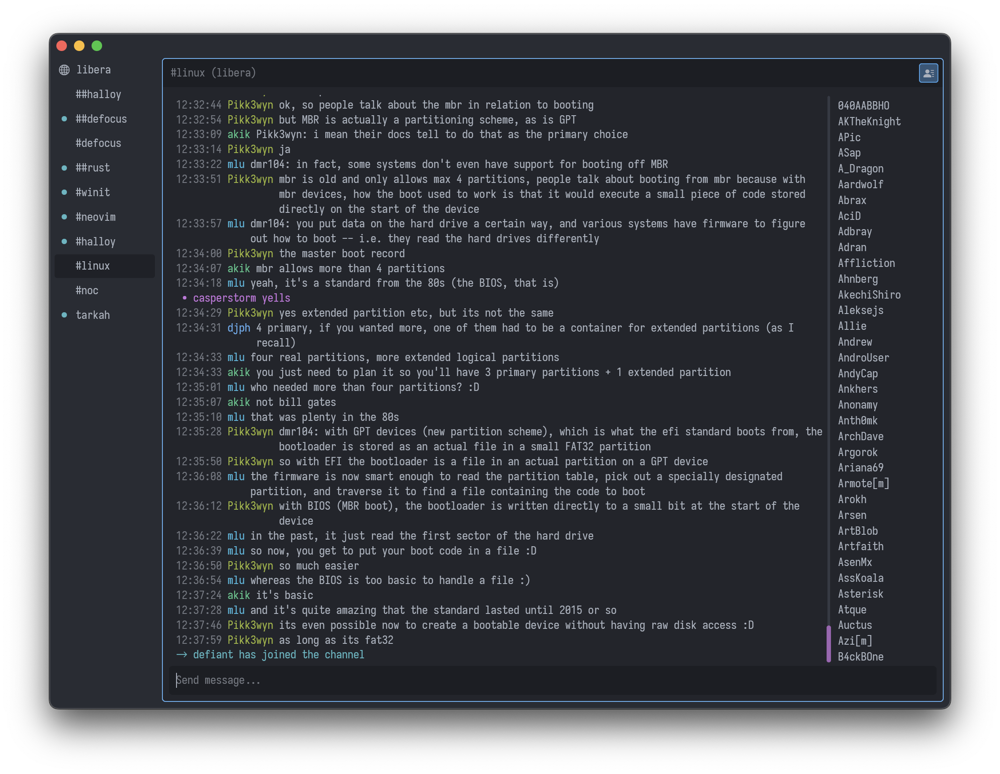

Halloy
Halloy is an open-source IRC client written in Rust, with the iced GUI library. It aims to provide a simple and fast client for Mac, Windows, and Linux platforms.
- IRCv3.2 capabilities
- SASL support
- DCC Send
- Keyboard shortcuts
- Auto-completion for nicknames, commands, and channels
- Notifications support
- Multiple channels at the same time across servers
- Commandbar for for quick actions
- Custom themes
- Portable mode
Contributing
Halloy is free and open source. You can find the source code as well as report issues and feature requests on GitHub.
Installing Halloy
💡 To get the latest nightly version of Halloy, you can build from source.
Pre-built binaries
Download pre-built binaries from GitHub page.
Packaging status
macOS
The following third party repositories are available for macOS
Homebrew
brew install --cask halloy
MacPorts
sudo port install halloy
Linux
The following third party repositories are available for Linux
Flatpak
https://flathub.org/apps/org.squidowl.halloy
Snapcraft
Windows
Winget
winget install squidowl.halloy
Build from source
Clone the Halloy GitHub repository into a directory of your choice and build with cargo.
Requirements:
# Clone the repository
git clone https://github.com/squidowl/halloy.git
cd halloy
# Build and run
cargo build --release
cargo run --release
Get in touch
Join #halloy on libera.chat if you have questions, looking for help or just want to say hello.
For feature requests or reporting issues, please open a ticket on GitHub.
Maintainers
Configuration
To edit configuration parameters, create a config.toml file located in your configuration directory:
- Windows:
%AppData%\halloy - Mac:
~/Library/Application Support/halloyor$HOME/.config/halloy - Linux:
$XDG_CONFIG_HOMEor$HOME/.config
💡 You can easily open the config file directory from command bar in Halloy
Example config for connecting to Libera:
[servers.liberachat]
nickname = "halloy-user"
server = "irc.libera.chat"
channels = ["#halloy"]
[buffer.channel.topic]
enabled = true
Buffer
[buffer] Section
[buffer.nickname] Section
[buffer.nickname]
color = "unique" | "solid"
brackets = { left = "<string>", right = "<string>" }
| Key | Description | Default |
|---|---|---|
color | Nickname colors. Can be "unique" or "solid". | "unique" |
brackets | Brackets for nicknames. | { left = "", right = "" } |
[buffer.timestamp] Section
[buffer.timestamp]
format = "<string>"
brackets = { left = "<string>", right = "<string>" }
| Key | Description | Default |
|---|---|---|
format | Format expected is strftime. To disable, simply pass empty string "". | "%R" |
brackets | Brackets for nicknames | { left = "", right = "" } |
[buffer.text_input] Section
[buffer.text_input]
visibility = "always" | "focused"
| Key | Description | Default |
|---|---|---|
visibility | Text input visibility. Can be "always" or "focused". | "always" |
[buffer.channel] Section
[buffer.channel.nicklist] Section
[buffer.channel.nicklist]
enabled = true | false
position = "left" | "right"
color = "unique" | "solid"
| Key | Description | Default |
|---|---|---|
enabled | Control if nicklist should be shown or not | true |
position | Nicklist position. Can be "left" or "right". | "right" |
color | Nickname colors. Can be "unique" or "solid". | "unique" |
[buffer.channel.topic] Section
[buffer.channel.topic]
enabled = true | false
max_lines = <integer>
| Key | Description | Default |
|---|---|---|
enabled | Control if topic banner should be shown or not | false |
max_lines | Amount of visible lines before you have to scroll in topic banner. | 2 |
[buffer.server_messages] Section
[buffer.server_messages.join]
enabled = true | false
smart = <integer>
username_format = "full" | "short"
[buffer.server_messages.part]
enabled = true | false
smart = <integer>
username_format = "full" | "short"
[buffer.server_messages.quit]
enabled = true | false
smart = <integer>
username_format = "full" | "short"
[buffer.server_messages.topic]
enabled = true | false
| Key | Description | Default |
|---|---|---|
enabled | Control if the server message should appear in buffers or not | true |
smart | Only show server message if the user has sent a message in the given time interval (seconds) prior to the server message. | not set |
username_format | Adjust how the username should look. Can be "full" (shows the longest username available (nickname, username and hostname) or "short" (only shows nickname). | "full" |
[buffer.internal_messages] Section
[buffer.internal_messages.success]
enabled = true | false
smart = <integer>
[buffer.internal_messages.error]
enabled = true | false
smart = <integer>
| Key | Description | Default |
|---|---|---|
enabled | Control if the internal message should appear in buffers or not | true |
smart | Only show internal message if received within the given time duration (seconds). | not set |
File Transfer
[file_transfer] Section
[file_transfer]
save_directory = "<string>"
passive = true | false
timeout = <integer>
| Key | Description | Default |
|---|---|---|
save_directory | Directory opened when prompted to save a file | $HOME/Downloads |
passive | If true, act as the "client" for the transfer. Requires the remote user act as the server | true |
timeout | Time (in seconds) to wait before timing out a transfer waiting to be accepted | 300 |
[file_transfer.server] Section
This section is required if passive = false. One side of the file transfer must
operate as the "server", who the other user connects with to establish a connection.
[file_transfer.server]
public_address = "<string>"
bind_address = "<string>"
bind_port_first = <integer>
bind_port_last = <integer>
| Key | Description | Default |
|---|---|---|
public_address | Address advertised to the remote user to connect to | "" |
bind_address | Address to bind to when accepting connections | "" |
bind_port_first | First port in port range to bind to | "" |
bind_port_last | Last port in port range to bind to | "" |
Font
[font] Section
[font]
family = "<string>"
size = <integer>
| Key | Description | Default |
|---|---|---|
family | Monospaced font family to use | ""1 |
size | Font size. | 13 |
Iosevka Term is provided by the application, and used by default.
Keyboard
[keyboard] Section
[keyboard]
move_up = "<string>"
move_down = "<string>"
move_left = "<string>"
move_right = "<string>"
close_buffer = "<string>"
maximize_buffer = "<string>"
restore_buffer = "<string>"
cycle_next_buffer = "<string>"
cycle_previous_buffer = "<string>"
toggle_nick_list = "<string>"
command_bar = "<string>"
| Key | Description | Default MacOS | Default Other |
|---|---|---|---|
move_up | Moves focus up | ⌥ + ↑ | alt + ↑ |
move_down | Moves focus down | ⌥ + ↓ | alt + ↓ |
move_left | Moves focus left | ⌥ + ← | alt + ← |
move_right | Moves focus right | ⌥ + → | alt + → |
close_buffer | Close focused buffer | ⌘ + w | ctrl + w |
maximize_buffer | Maximize focused buffer | ⌘ + ↑ | ctrl + ↑ |
restore_buffer | Restore focused buffer | ⌘ + ↓ | ctrl + ↓ |
cycle_next_buffer | Cycle to next buffer | ctrl + tab | ctrl + tab |
cycle_previous_buffer | Cycle to previous buffer | ctrl + shift + tab | ctrl + shift + tab |
toggle_nick_list | Toggle nick list | ⌘ + ⌥ + m | ctrl + alt + m |
command_bar | Toggle command bar | ⌘ + k | ctrl + k |
Example for vim like movement
[keyboard]
move_up = "alt+k"
move_down = "alt+j"
move_left = "alt+h"
move_right = "alt+l"
Notifications
[notifications] Section
[notifications.connected]
enabled = true | false
sound = "<string>"
mute = true | false
[notifications.disconnected]
enabled = true | false
sound = "<string>"
mute = true | false
[notifications.reconnected]
enabled = true | false
sound = "<string>"
mute = true | false
[notifications.highlight]
enabled = true | false
sound = "<string>"
mute = true | false
[notifications.file_transfer_request]
enabled = true | false
sound = "<string>"
mute = true | false
| Key | Description | Default |
|---|---|---|
enabled | Control if notification should be enabled or not. | false |
mute | Control if the notification should have sound or not. | false |
sound | The sound which plays when the notification is fired. | "Submarine" (macOS1), "Mail" (Windows2), "message-new-instant" (Linux3) |
The following sounds are available for macOS:
"Basso""Blow""Bottle""Frog""Funk""Glass""Hero""Morse""Ping""Pop""Purr""Sosumi""Submarine""Tink"
The following sounds are avaiable for Windows:
"Default""IM""Mail""Reminder""SMS"
The following sounds are avaiable for Linux:
"message-new-instant"
Scale factor
scale_factor = <float>
scale_factor is a root key, so it must be placed before any section.
Limited between 0.1 and 3.0.
Servers
[servers] Section
Example
[servers.liberachat]
nickname = "halloy-user"
server = "irc.libera.chat"
channels = ["#halloy"]
| Key | Description | Default |
|---|---|---|
nickname | The client's nickname. | "" |
nick_password | The client's NICKSERV password. | "" |
nick_password_file | Alternatively read nick_password from the file at the given path. | "" |
nick_identify_syntax | The server's NICKSERV IDENTIFY syntax. Can be "nick-password" or "password-nick". | "" |
alt_nicks | Alternative nicknames for the client, if the default is taken. | [""] |
username | The client's username. | "" |
realname | The client's real name. | "" |
server | The server to connect to. | "" |
port | The port to connect on. | 6697 |
password | The password to connect to the server. | "" |
password_file | Alternatively read password from the file at the given path. | "" |
channels | A list of channels to join on connection. | [""] |
channel_keys | A mapping of channel names to keys for join-on-connect. | {} |
ping_time | The amount of inactivity in seconds before the client will ping the server. | 180 |
ping_timeout | The amount of time in seconds for a client to reconnect due to no ping response. | 20 |
reconnect_delay | The amount of time in seconds before attempting to reconnect to the server when disconnected. | 10 |
should_ghost | Whether the client should use NickServ GHOST to reclaim its primary nickname if it is in use. | false |
ghost_sequence | The command(s) that should be sent to NickServ to recover a nickname. | ["GHOST"] |
umodes | User modestring to set on connect. Example: "+RB-x". | "" |
use_tls | Whether or not to use TLS. Clients will automatically panic if this is enabled without TLS support. | true |
dangerously_accept_invalid_certs | On true, all certificate validations are skipped. Defaults to false. | false |
root_cert_path | The path to the root TLS certificate for this server in PEM format. | "" |
on_connect | Commands which are executed once connected. Example. ["/msg NickServ IDENTIFY foo bar"]. | [] |
who_poll_interval | WHO poll interval (in seconds) for servers without away-notify. | 1801 |
who_retry_interval | WHO retry interval (in seconds) for servers without away-notify. | 101 |
Limited between 5 and 3600 seconds.
[servers.sasl] Section
[sasl.plain]:
[servers.liberachat.sasl.plain]
username = "<string>"
password = "<string>"
| Key | Description | Default |
|---|---|---|
username | The account name used for authentication. | "" |
password | The password associated with the account used for authentication. | "" |
password_file | Alternatively read password from the file at the given path. | "" |
[sasl.external]
[servers.liberachat.sasl.external]
cert = "<string>"
key = "<string>"
💡 External SASL auth uses a PEM encoded X509 certificate. Reference.
| Key | Description | Value |
|---|---|---|
cert | The path to PEM encoded X509 user certificate for external auth | "" |
key | The path to PEM encoded PKCS#8 private key for external auth (optional) | "" |
Sidebar
[sidebar] Section
[sidebar]
default_action = "new-pane" | "replace-pane"
width = <integer>
| Key | Description | Default |
|---|---|---|
default_action | Action when selecting buffers in the sidebar. Can be "new-pane" or "replace-pane". | "new-pane" |
width | Specify sidebar width in pixels. | 120 |
[sidebar.buttons] Section
[sidebar.buttons]
file_transfer = true | false
command_bar = true | false
| Key | Description | Default |
|---|---|---|
file_transfer | File transfer button in sidebar. | true |
command_bar | Command bar button in sidebar. | true |
Themes
theme = "<string>"
theme is a root key, so it must be placed before any section.
Name of theme file inside themes folder.
Using Ferra by default.
Custom themes
To create a custom theme for Halloy, simply place a theme file (with a .toml extension) inside the themes folder within the configuration directory.
💡 The configuration direction can be found here.
A custom theme is structured as follows.
name = "<string>"
[palette]
background = "<string>"
text = "<string>"
action = "<string>"
accent = "<string>"
alert = "<string>"
error = "<string>"
info = "<string>"
success = "<string>"
| Key | Description |
|---|---|
name | Name of the theme to use |
palette | Colors expect a hex color string. Eg: "#2b292d" |
Community
This is a list of community created themes for Halloy.
💡 Have a great theme you want to share? Open a pull-request here.
Zenburn - Save

Material - Save
Oceanic Next - Save

Tomorrow Night - Save

Monokai Pro - Save

One Dark Pro - Save
Nord - Save

Solarized (Dark) - Save

Harmony (Dark) - Save

Dracula - Save

Kanagawa - Save

Boo berry - Save

Catpuccin Frappe - Save

Catpuccin Macchiato - Save

Catpuccin Mocha - Save

Tooltips
tooltips = true | false
| Key | Description | Default |
|---|---|---|
tooltips1 | Control if tooltips are displayed or not. | true |
tooltips is a root key, so it must be placed before any section.
Getting started
To get started with Halloy, you need to connect to at least one IRC server. The template config file has been set up with the Libera server. However, there are many other servers available: OFTC, Undernet, EFnet, QuakeNet and many more. Halloy can connect to multiple servers at the same time.
Once connected to a server, you can join channels. This can be done automatically from the config file or manually using the join command: /join #channel1. To find channels, you can either use the list command: /list, or browse for channels online.
💡 Configuration in Halloy happens through a
config.tomlfile. See Configuration.
Here are a few useful IRC commands for a new user2
| Command | Example | Description |
|---|---|---|
/join | /join #halloy | Join a new channel |
/part | /part #halloy | Part a channel |
/nick | /nick halloyisgreat | Change your nickname |
/whois nickname | /whois halloyisgreat | Displays information of nickname requested |
/list *keyword* | /list *linux* | List channels. Keyword is optional |
Channel names always start with a # symbol and do not contain spaces.
Find more commands here.
Migrating from YAML
Halloy recently switched configuration file format from YAML to TOML (PR-278)
This page will help you migrate your old config.yaml to a new config.toml file.
The basic structure of a TOML file consists of key-value pairs, where keys are strings. There are no nested indentations like YAML, which makes it easier to read and write. Consider the following old YAML config with of two servers in Halloy:
servers:
libera:
nickname: foobar
server: irc.libera.chat
quakenet:
nickname: barbaz
server: underworld2.no.quakenet.org
port: 6667
use_tls: true
This now looks the following in TOML
[servers.libera]
nickname = "foobar"
server = "irc.libera.chat"
[servers.quakenet]
nickname = "barbaz"
server = "underworld2.no.quakenet.org"
port = 6667
use_tls = true
💡 You can convert YAML to TOML using a converter tool like this one. Just note that a few keys and values have be renamed during the conversion process.
To migrate, and ensure everything is working, make sure to read through the Configuration section of this book. Here, every configuration option is documented using TOML.
If you still have trouble or find any issues, make sure to get in touch.
Connect with Soju
To connect with a soju1 bouncer, the configuration below can be used as a template. Simply change so it fits your credentials.
[servers.libera]
nickname = "casperstorm"
username = "<your-username>/irc.libera.chat@desktop"
server = "irc.squidowl.org"
password = "<your-password>"
Connect with ZNC
To connect with a ZNC1 bouncer, the configuration below can be used as a template. Simply change so it fits your credentials.
[servers.libera]
nickname = "<znc-user>/<znc-network>"
server = "znc.example.com"
password = "<your-password>"
Portable mode
To enable portable mode for Halloy, simply place the config.toml file in the same directory as the running executable.
.
├── Halloy.app
└── config.toml